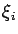
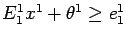

Show that the optimal value of this problem is zero, achieved by any feasible x1. Show that setting each  equal to its mean and solving the resulting problem does not give a lower bound on Q2(x1), unless x1=2.
By formulating the extensive form of the problem as a linear programming problem, or otherwise, confirm that the optimal value is 2.5. Show that if x1=0 then Q2(x1)=3.
Take x1=2 as the first stage solution in the nested L-shaped method for this problem. Find the first cut generated by the algorithm of the form . Show that E11x1 + Q2(x1) > e11 for all feasible x1.
| John Mitchell | Amos Eaton 325 | |
| x6915. | mitchj@rpi.edu | |
| Office hours: | Tuesday: 2pm - 4pm. |